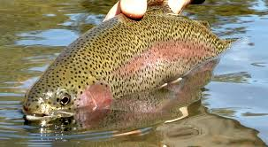
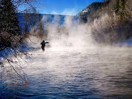

1 / 3

River casting
2 / 3

Brown Trout
3 / 3

Misty Day
Colorado has lost of options for fishing whether you are interested in fly fishing for wild trout in the winding rivers or trying your hand had the hard fighting carp.
I have listed a few of the places that I like to fish in Colorado since I moved here last year. I have fished for trout and carp along with Bass in the local area. Before I started I did research across the web to find out some insider knowledge, the links to those sites are further on, they provide a lot of additional information.
Deckers provides over a 10 mile stretch of the River Platte and is about and 45 minutes drive from highlands ranch. I had to learn how to fish the river and would recommend a guided fishing trip if you haven't fished the river before.
The local fishing tackle shop also provides a lot of helpful information and it is where you can arrange the guided trips.
You can find the local tackle shop details here. the guys that work in the shop are really helpful
You can find the latest fishing reports here.
Handy link to Deckers and map can be found here.
Mount Evans fishing is a bait only pond, you are going to catch, although don't get carried away it cost per inch of fish caught :-)
you can find more about Mount evans here.